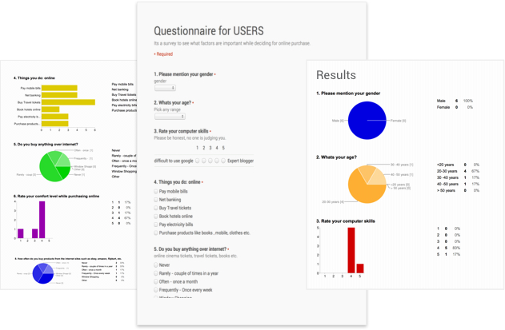
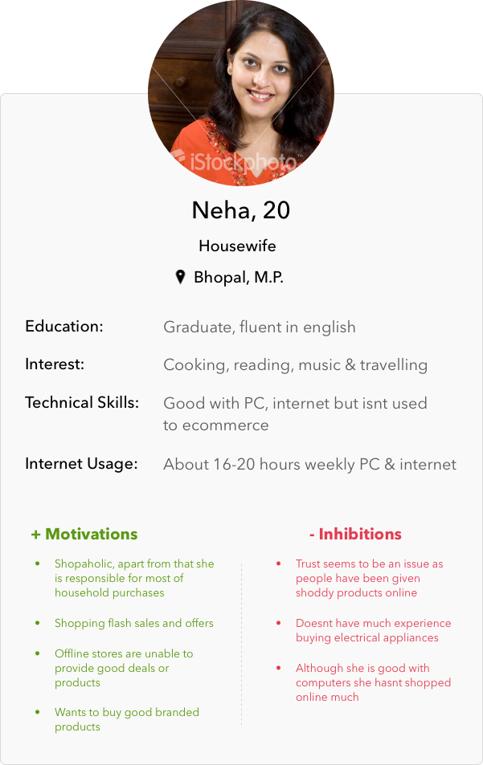
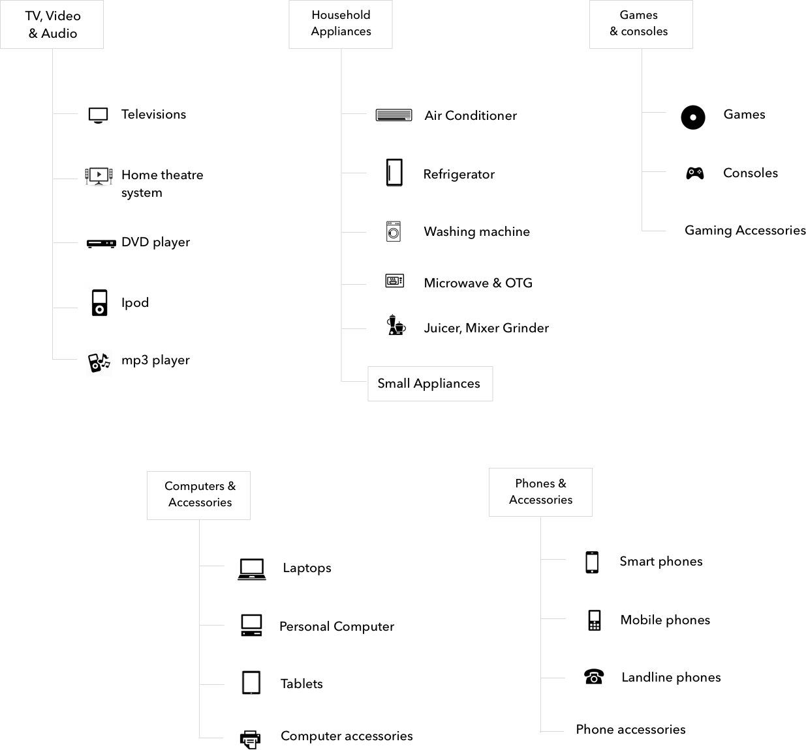

Next online is one of India's leading electronic retail store with both offline and online presence. Next is a part of Videocon group, so it had almost all the range of products from Videocon and its sister brands but also had items of all the other major brands.
My role in the project was that of an interaction designer as well and SPOC, where I co-ordinated with other stakeholder as well. Apart from that I had to co-ordinate with other partners to ensure a quick implemnetation of the webstore.
Videocon
Information Architecture, Interaction Design
Feb '12 – Aug '12
www.next.co.in
Improve the overall UX of the site, improve the checkout flow. Highlight the savings and deals to end users as price was a very important factor. Also find usability issues in checkout flow & iterate on them.
The checkout flow beacme more clear and also by highlighting the steps and simplifying the flow. Reduced the errors in the checkout flow and made it more clear and intuitive.
Mainly I worked on optimising the main user flow to highlight the product and its details. Also higlighted the cross-sell & upsell in the product detail page and offers/deals in the lister pages.
Increased conversion rate by 50% and customer satisfaction by 20% .
For certain months we saw an increase of more that 100% in certain months (Y/Y).
Although the store was any ecommerce store but we wanted to focus on health and fitness. Also we wanted to users to explore sports and outdoor activities.
I started the work by evalutaing the existing website, apart from me I asked other design colleague to evaluate the existing webiste. Also during my initial discussions with the team I got to various key inputs from the design team.
Also I went through many other major ecommerce sites Indian as well as sites with similar concept of offline as well as online presence. Initially we had a plan of a minimal integration of offline and online store, but we kept it a later stage.
I conducted an online survey/questionaire to find key issues about the existing shop. I wanted to check existing issues users had or any common issues they witness in day-to-day tasks. Also what they think might be existing issues with the webstore. Also this excercise helped me to understand 'NEXT' a little more.
Based upon my interviews with stakeholders and initial review I created persona based upon user profiles and my initial user research. The personas helped us to evaluate deisgn solutions and new fetaures.
I had to restructure the entire categorization as the current one was confusing which was in our initial design feedback. Also there were duplication of many categories which confused the end user. Mobile phones and accessories which were very poular was locked in Computer, laptops and more.
We wanted to keep a simple and clear separation of categories so that it doesnt confuses the end users. As we kept on adding certain other categories we had to restructure it.
I started initially mocking on the paper mocks up to decide on layout and other details. I finally created wireframe using Powerpoint as we had a tight schedule and creating interactive high-fidelty mocks was time consuming. Also powerpoint allowed me to showcase the design more quickly. Also the basic checkout flow in ecommerce is almost standard so I didn't have to re-work on that entire flow.
Also we worked in agile manner any minor feedback or flaws were corrected in the development cycle itself. Also I worked on a minimalist documentation so that it can be shared for further development. Documentation included image dimesions, offer banners and other details which needed to share to external partners.